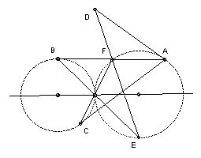

| A1. Let R be the reals and f: R → R a function such that f( cot x ) = cos 2x + sin 2x for all 0 < x < π. Define g(x) = f(x) f(1-x) for -1 ≤ x ≤ 1. Find the maximum and minimum values of g on the closed interval [-1, 1]. | |
|
A2. The circles C1 and C2 touch externally at M and the radius of C2 is larger than that of C1. A is any point on C2 which does not lie on the line joining the centers of the circles. B and C are points on C1 such that AB and AC are tangent to C1. The lines BM, CM intersect C2 again at E, F respectively. D is the intersection of the tangent at A and the line EF. Show that the locus of D as A varies is a straight line.
 |
|
| A3. Let Sn be the number of permutations (a1, a2, ... , an) of (1, 2, ... , n) such that 1 ≤ |ak - k | ≤ 2 for all k. Show that (7/4) Sn-1 < Sn < 2 Sn-1 for n > 6. | |
|
B1. Find the largest positive integer n such that the following equations have integer solutions in x, y1, y2, ... , yn:
(x + 1)2 + y12 = (x + 2)2 + y22 = ... = (x + n)2 + yn2. |
|
| B2. Define p(x) = 4x3 - 2x2 - 15x + 9, q(x) = 12x3 + 6x2 - 7x + 1. Show that each polynomial has just three distinct real roots. Let A be the largest root of p(x) and B the largest root of q(x). Show that A2 + 3 B2 = 4. | |
| B3. Let R+ be the set of positive reals and let F be the set of all functions f : R+ → R+ such that f(3x) ≥ f( f(2x) ) + x for all x. Find the largest A such that f(x) ≥ A x for all f in F and all x in R+. |

Many thanks to Hung Ha Duy for providing and translating the questions.
Vietnam home
© John Scholes
jscholes@kalva.demon.co.uk
25 Mar 2003
Last updated/corrected 9 July 03